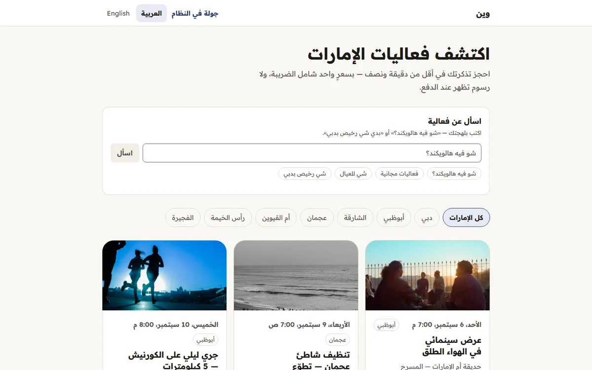
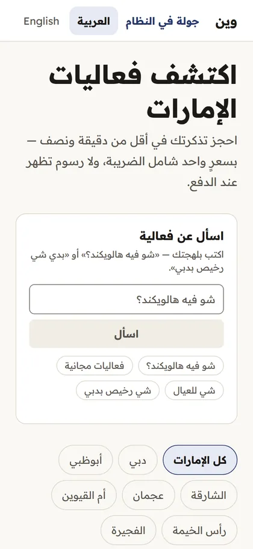
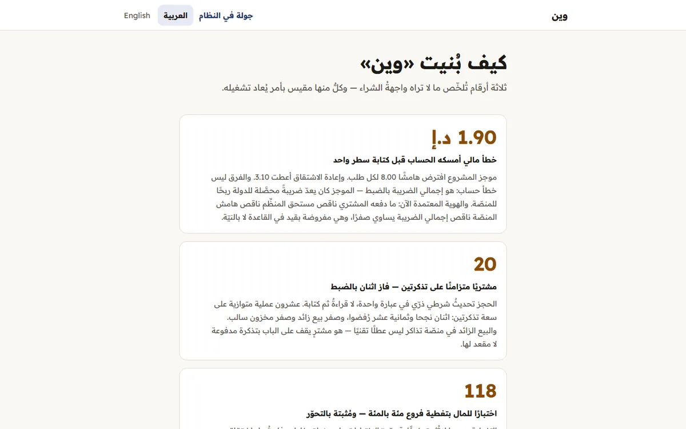
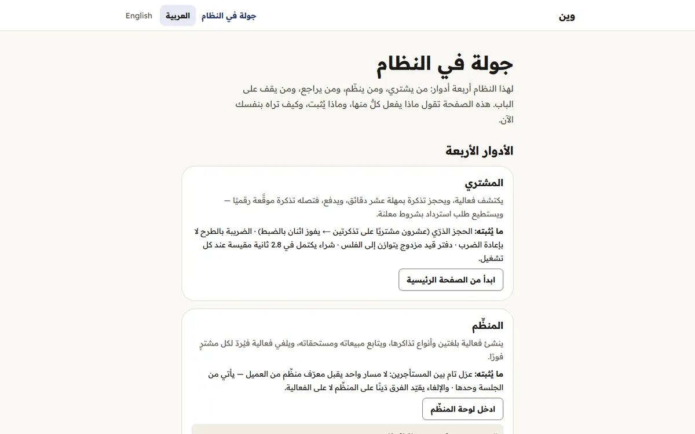
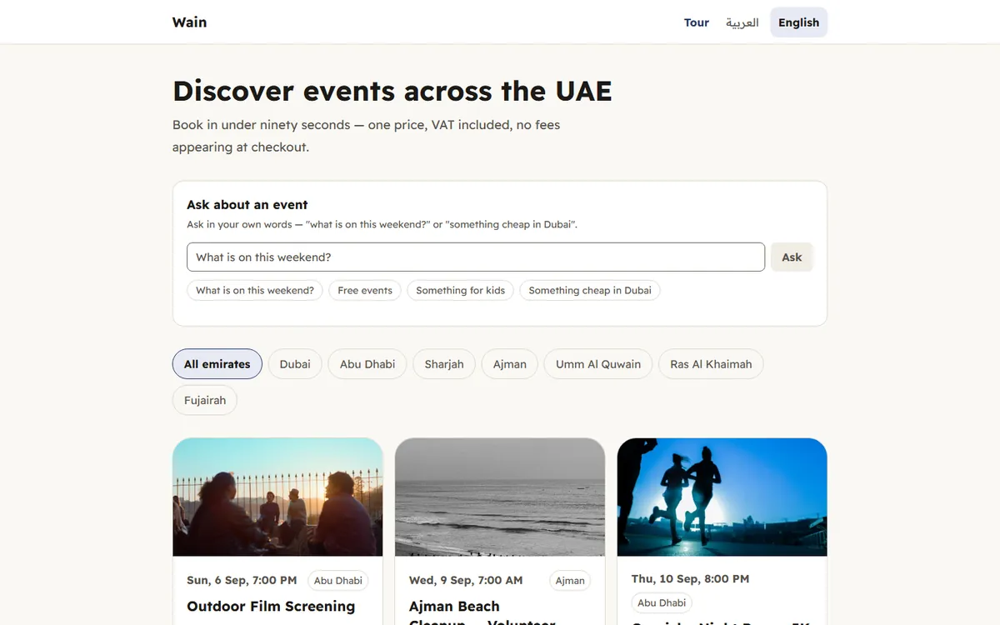

The scale, before any claim
Zero real users · 137 commits over 7 days, single author · Live demo deployment, not production: the payment gateway is fully simulated, mail is written to files and never leaves the box, and the demo data (11 events · 27 orders · 117 ledger entries) is wiped and re-seeded by cron every day at 03:00 UTC. Not one real payment has ever passed through it.
- The problem
- Every money event — a payment, a refund, an organizer payout — writes a group of ledger entries whose debits must equal its credits. Enforce that in application code and any new path that writes half an entry succeeds silently; the defect only surfaces weeks later at reconciliation, which is exactly the class of bug code review does not catch. The fix lives in `apps/api/drizzle/0006_chilly_venom.sql:106`: `ledger_group_must_balance()` sums `SUM(CASE WHEN direction = 'debit' THEN amount_minor ELSE -amount_minor END)` across the whole group and raises if the difference is non-zero, wired up as `CREATE CONSTRAINT TRIGGER ... DEFERRABLE INITIALLY DEFERRED` (lines 123-126). A second trigger, `ck_ledger_append_only` (line 138) on `BEFORE UPDATE OR DELETE`, forces corrections to be reversing entries rather than edits, so the audit trail the ledger exists for survives. And the guard is proven, not described: an integration test against a real Postgres via Testcontainers inserts half an entry inside a transaction, the whole transaction dies with `ck_ledger_group_balances`, and zero rows remain (`apps/api/test/refund.integration.test.ts:370`).
- What it proves
- That Hani puts the invariant that must not break at the lowest layer able to enforce it — the database — not in a comment or a code review, and understood why an immediate check would fail before he wrote the deferral. And that he distinguishes a guard that is written from a guard that is proven: the same repo carries a launch-gate document scoring his own project at 26% green with a run command behind every gap, and an ADR that states outright that the phrasing layer "has never been run against a real API."
The mechanism
The defect happens first, then the mechanism that makes it impossible.
How to read it The defect: a new code path — a refund, say — writes half a ledger entry and forgets its counterpart; an application-level check would have let it through silently. The gate under the box stops it: a constraint trigger deferred to COMMIT sees the group off by 1000 and kills the whole transaction. Zero rows remain, not half an entry.
Screens
Captured 2026-09-05 from the addresses shown beneath them, exactly as served — nothing staged.





The code, verbatim
-- ══════════════════════════════════════════════════════════════════════
-- توازن دفتر الأستاذ — **مفروض لا مرجوّ**
-- ══════════════════════════════════════════════════════════════════════
-- محفّز قيد **مؤجَّل**: يُفحَص عند COMMIT لا عند كل صفّ، لأن قيود المجموعة
-- تُكتب صفًّا صفًّا فالفحص الفوري كان سيرفض أولها دائمًا.
-- مجموعة مدينُها لا يساوي دائنها تُسقط المعاملة كلها — فكتابة نصف قيد
-- صارت مستحيلة، لا مستهجَنة.
CREATE OR REPLACE FUNCTION ledger_group_must_balance() RETURNS trigger AS $$
DECLARE
diff bigint;
BEGIN
SELECT COALESCE(SUM(CASE WHEN direction = 'debit' THEN amount_minor ELSE -amount_minor END), 0)
INTO diff
FROM ledger_entries
WHERE entry_group = NEW.entry_group;
IF diff <> 0 THEN
RAISE EXCEPTION 'ck_ledger_group_balances: مجموعة % غير متوازنة، الفرق %', NEW.entry_group, diff
USING ERRCODE = 'check_violation';
END IF;
RETURN NULL;
END;
$$ LANGUAGE plpgsql;--> statement-breakpoint
CREATE CONSTRAINT TRIGGER ck_ledger_group_balances
AFTER INSERT ON ledger_entries
DEFERRABLE INITIALLY DEFERRED
FOR EACH ROW EXECUTE FUNCTION ledger_group_must_balance();--> statement-breakpoint
Copied verbatim from the repository; nothing elided.
Every number, and the command that produced it
-
323
tests passing on an actual run (205 in apps/api across 8 files + 118 in packages/money across 6)
Source
cd apps/api && npx vitest run --config vitest.config.mts | cd packages/money && npx vitest run -
100%
branch coverage on packages/money — 62/62 branches, enforced as a build gate, not a report
Source
packages/money/coverage/coverage-summary.json (total.branches 62/62) + packages/money/vitest.config.ts:12 thresholds:{branches:100,...} -
0.99
Lighthouse performance on the live deployment (a11y 1.00 · SEO 1.00 · LCP 2.0s · CLS zero)
Source
python -c "import json;d=json.load(open('lighthouse-reports/_ar_e_desert_stargazing_night.json'));print(d['finalUrl'],{k:v['score'] for k,v in d['categories'].items()})" -
57
CHECK constraints across the 16 migration files, over 23 tables
Source
grep -o CHECK apps/api/drizzle/0*.sql | wc -l → 57 | grep -ho "CREATE TABLE[^(]*" apps/api/drizzle/0*.sql | sort -u | wc -l → 23 | ls apps/api/drizzle/0*.sql | wc -l → 16 -
26%
his own launch gate's verdict on his own project: 15 of 57 items met (then 21 after closing six)
Source
docs/launch-gate.md — جدول الحصيلة (15 ✅ / 19 🟡 / 19 ⬜ / 4 ➖ = 57) و السطر 112 -
34
paths in the code-generated OpenAPI contract (35 operations · 39 schemas); drift is a CI gate
Source
python -c "import json;d=json.load(open('packages/contracts/openapi.json'));print(len(d['paths']),len(d['components']['schemas']))"
What it does not do
- Not one real user has bought a ticket. The live numbers (11 events · 27 orders · 117 ledger entries) are seed data that a cron job wipes and re-seeds daily at 03:00 UTC — documented at docs/runbooks/deploy-2026-08-28.md:51.
- The payment gateway is fully simulated: SimulatedGateway is the only implementation of the PaymentGateway contract (apps/api/src/payments/simulated-gateway.ts:40, injected at providers.ts:21) — no Stripe, no live keys. Mail: a Resend transport exists (resend.mailer.ts:60) but the default is `file` (mailer.ts:50) and that is what the deployment runs — messages are written to files and never leave the box. "How did you handle a real gateway failure or a chargeback dispute?" has no answer from this project.
- No Row Level Security despite a multi-tenant product: grep -ic "ROW LEVEL SECURITY" returns zero on every one of the 16 migrations. Isolation between organizers is enforced in the application layer alone. And 15 of the 16 migrations have no down file (down/ holds only 0000_down.sql).
- The gates do not cover the latest work: the last CI run was 2026-08-29 on main (a86a564), while current HEAD (2a3e822) is six commits ahead on branch docs/v2-design-audit and has passed no gate. The repo is also private, so no reviewer can read a line of it without an invite.
Stack
- TypeScript 5.9.3 (المستودع كله)
- Next.js 16.3.1 + React 19.2.8 + next-intl 4.13.7 (SSR، عربي/إنجليزي، RTL)
- Tailwind CSS 4.3.3 + توكنات DTCG
- NestJS 11.2.1 + @nestjs/swagger 11.4.7 (OpenAPI مولَّد من الكود)
- PostgreSQL 18 + Drizzle ORM 0.45.2 + drizzle-kit 0.31.10 (16 ترحيلاً)
- Valkey 9
- packages/money — BigInt ونقاط أساس، بلا عشري عائم
- Ed25519 عبر node:crypto لتوقيع تذاكر QR
- Flutter / Dart — ماسح التذاكر (738 سطراً في 4 ملفات)
- @anthropic-ai/sdk 0.120.0 — طبقة صياغة اختيارية، لا تحسب رقماً
- Vitest 4.1.10 + Testcontainers 12.1.0 (Postgres حقيقي)
- Playwright 1.62.1 + @axe-core/playwright 4.13.0
- GitHub Actions (7 وظائف: verify · integration · e2e · secrets · sast · audit · images) + Semgrep + gitleaks + Lighthouse
- Docker + docker-compose + GHCR + nginx
- pnpm 11.5.2 workspaces + eslint-plugin-boundaries 7.2.0
The repository is private by a documented decision (ADR-0016).